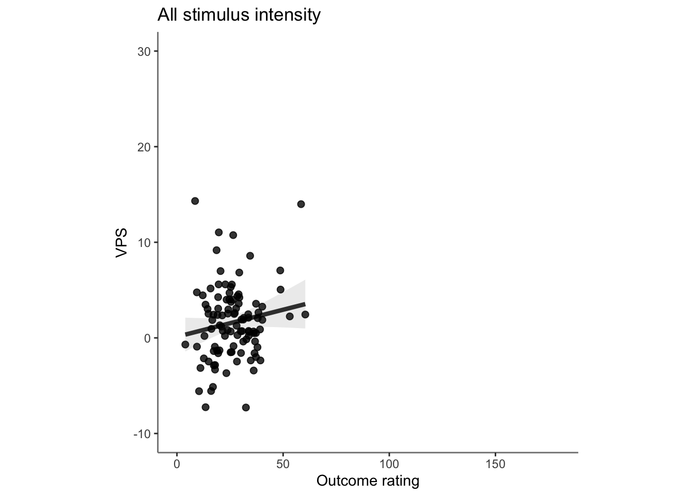
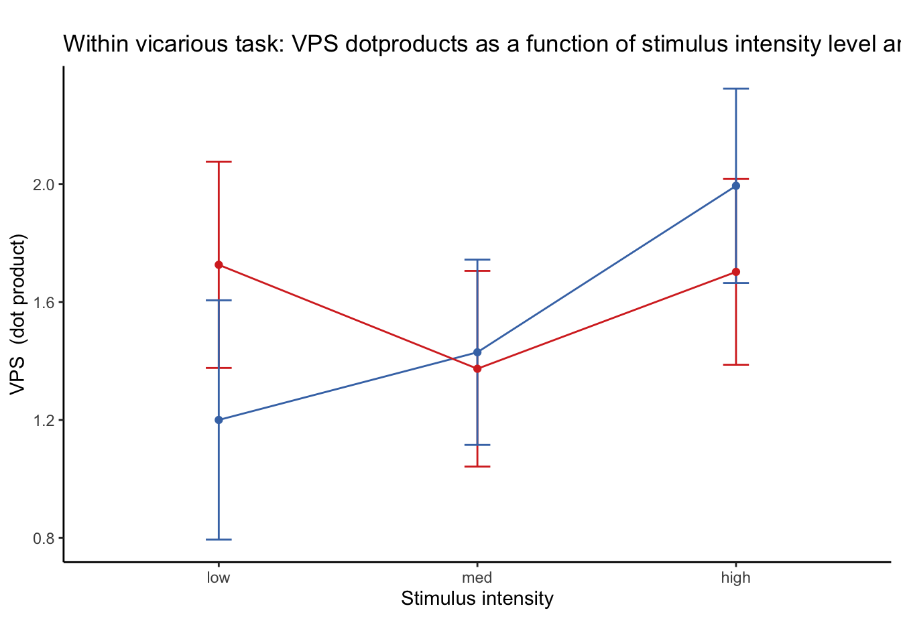
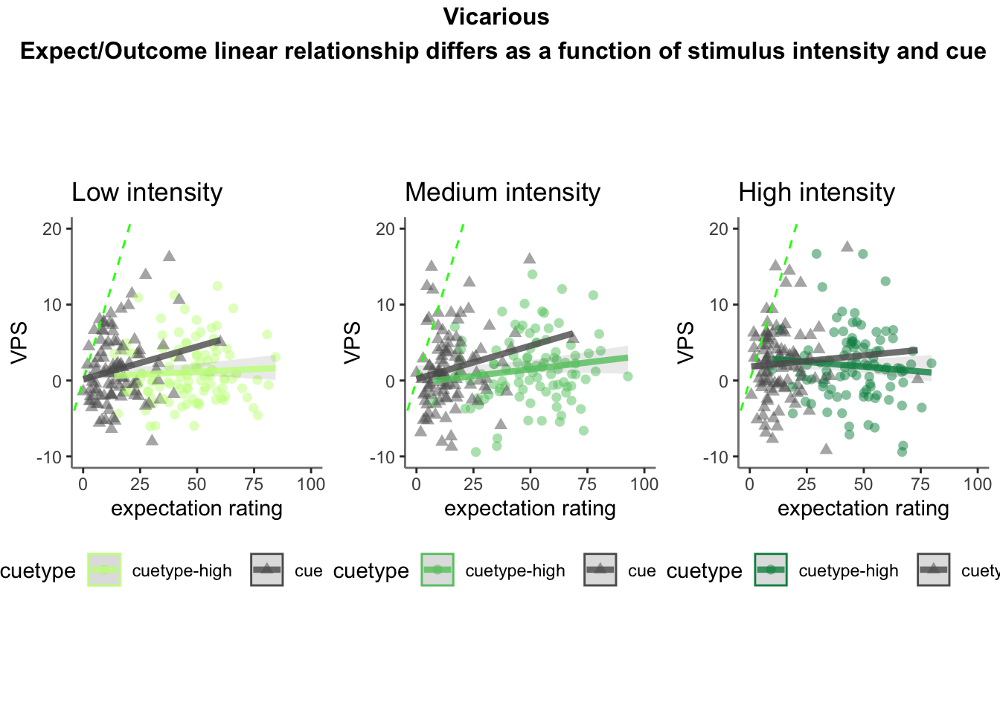

Chapter 27 [fMRI] Vicarious signature ~ single trial
author: "Heejung Jung
date: "2023-03-04"color_scheme = c(“#C6FF8A”, “#63C76E”, “#008F51”)
Step 1: Common parameters
# step 1: load data
for (signature_key in c("VPS")) {
#c("NPS", "NPSpos", "NPSneg", "VPS", #"VPSnooccip", "ThermalPain", "MechPain", "GeneralAversive", "AversiveVisual"
# "ZhouVPS", "PINES", "GSR", "GeuterPaincPDM")) {
dv_keyword = signature_key
signature_name = signature_key
# step 1: common parameters _______
main_dir <- dirname(dirname(getwd()))
analysis_folder = paste0("model36_iv-task-stim_dv-", signature_key)
sig_name <-
Sys.glob(file.path(
main_dir,
"analysis/fmri/nilearn/signature_extract",
paste0(
"signature-",
signature_key,
"_sub-all_runtype-pvc_event-stimulus.tsv"
)
)) # nolint
print(sig_name)
analysis_dir <-
file.path(main_dir,
"analysis",
"mixedeffect",
analysis_folder,
as.character(Sys.Date())) # nolint
dir.create(analysis_dir,
showWarnings = FALSE,
recursive = TRUE)
savedir <- analysis_dir
# step 2: load data
df = read.csv(sig_name)
sig_df = df %>% separate(
singletrial_fname,
sep = "_",
c(
"sub",
"ses",
"run",
"runtype",
"event",
"trial",
"cuetype",
"stimintensity"
)
)
sig_df = sig_df %>% separate(
stimintensity,
into = c(NA, "stimintensity"),
extra = "drop",
fill = "left"
)
pvc <- simple_contrasts_singletrial(sig_df)
pvc$task[pvc$runtype == "runtype-pain"] <- "pain"
pvc$task[pvc$runtype == "runtype-vicarious"] <- "vicarious"
pvc$task[pvc$runtype == "runtype-cognitive"] <- "cognitive"
pvc$task <- factor(pvc$task)
# step 3: parameters
taskname = "all"
plot_keyword = "stimulusintensity"
ggtitle_phrase = "(3 tasks x 3 stimulus intensity)"
pvc$task = factor(pvc$task)
plot_keys <- list(
sub_mean = "mean_per_sub",
group_mean = "mean_per_sub_norm_mean",
legend_keyword = "stimulus intensity",
se = "se",
subject = "sub",
ggtitle = paste0(
str_to_title(signature_key),
" dot product: ",
str_to_title(taskname),
' ',
ggtitle_phrase,
" (N = ",
length(unique(pvc$sub)),
")"
),
title = paste0(
str_to_title(signature_key),
" - ",
str_to_title(plot_keyword)
),
xlab = "",
ylab = paste(signature_key, " (dot product)"),
ylim = c(-250, 500)
)
# step 4: within between summary
groupwise <- data.frame()
subjectwise <- data.frame()
summary <- summary_for_plots_PVC(
df = pvc,
# taskname = taskname,
groupwise_measurevar = plot_keys$sub_mean,
# "mean_per_sub",
subject_keyword = plot_keys$subject,
# "sub",
model_iv1 = "task",
model_iv2 = "stim_ordered",
dv = signature_key #"VPS"
)
subjectwise <<- as.data.frame(summary[[1]])
groupwise <<- as.data.frame(summary[[2]])
if (any(startsWith(dv_keyword, c("expect", "Expect")))) {
plot_keys$color <- c("#1B9E77", "#D95F02", "#D95F02")
} else {
plot_keys$color <- c("#4575B4", "#FFA500", "#D73027")
}
# step 5: plot
iv2 = "stim_ordered"
iv1 = "task"
taskname = "all"
if (any(startsWith(dv_keyword, c("expect", "Expect")))) {
color <- c("#1B9E77", "#D95F02", "#D95F02")
} else {
color <- c("#4575B4", "#FFA500", "#D73027")
}
subject_mean <- "mean_per_sub"
sub_mean = subject_mean
group_mean <- "mean_per_sub_norm_mean"
se <- "se"
ylim <- c(-25, 26)
subject <- "sub"
ggtitle_phrase <- "(3 tasks x 3 stimulus intensity)"
ggtitle <-
paste0(
str_to_title(signature_name),
" dot product: ",
str_to_title(taskname),
' ',
ggtitle_phrase,
" (N = ",
length(unique(pvc$sub)),
")"
)
title <-
paste0(str_to_title(dv_keyword),
" - ",
str_to_title(plot_keys$legend_keyword))
xlab <- ""
plot_keyword = "stimintensity"
ylab <- paste(signature_name, " (dot product)")
plot2_savefname <- file.path(
analysis_dir,
paste(
"signature_task-",
taskname,
"_event-",
plot_keyword,
"_dv-",
signature_key,
"_",
as.character(Sys.Date()),
".png",
sep = ""
)
)
p <- plot_halfrainclouds_twofactor(
subjectwise,
groupwise,
iv1,
iv2,
subject_mean,
group_mean,
se,
subject,
ggtitle,
title,
xlab,
ylab,
taskname,
ylim,
w = 10,
h = 6,
dv_keyword,
color,
plot2_savefname
)
p
}## [1] "/Users/h/Dropbox (Dartmouth College)/projects_dropbox/social_influence_analysis/analysis/fmri/nilearn/signature_extract/signature-VPS_sub-all_runtype-pvc_event-stimulus.tsv"## Warning: Removed 1 rows containing missing values (`geom_half_violin()`).Load behavioral data
main_dir = dirname(dirname(getwd()))
print(main_dir)## [1] "/Users/h/Dropbox (Dartmouth College)/projects_dropbox/social_influence_analysis"datadir = file.path(main_dir, 'data', 'beh', 'beh02_preproc')
taskname = '*'
subject_varkey <- "src_subject_id"
iv <- "param_stimulus_type";
iv_keyword <- "stim";
dv <- "event04_actual_angle"; dv_keyword <- "outcome"
exclude <- "sub-0001|sub-0003|sub-0004|sub-0005|sub-0025|sub-0999"
p.df <- load_task_social_df(datadir, taskname = "pain", subject_varkey, iv, dv, exclude)
v.df <- load_task_social_df(datadir, taskname = "vicarious", subject_varkey, iv, dv, exclude)
c.df <- load_task_social_df(datadir, taskname = "cognitive", subject_varkey, iv, dv, exclude)
p.df2= p.df %>%
arrange(src_subject_id ) %>%
group_by(src_subject_id) %>%
mutate(trial_index = row_number())
data_p <- p.df2 %>%
group_by(src_subject_id, session_id, param_run_num) %>%
mutate(trial_index = row_number(param_run_num))
v.df2= v.df %>%
arrange(src_subject_id ) %>%
group_by(src_subject_id) %>%
mutate(trial_index = row_number())
data_v <- v.df2 %>%
group_by(src_subject_id, session_id, param_run_num) %>%
mutate(trial_index = row_number(param_run_num))
c.df2= c.df %>%
arrange(src_subject_id ) %>%
group_by(src_subject_id) %>%
mutate(trial_index = row_number()-1)
data_c <- c.df2 %>%
group_by(src_subject_id, session_id, param_run_num) %>%
mutate(trial_index = row_number(param_run_num) )
p.sub <- data_p[,c("src_subject_id", "session_id", "param_run_num", "param_task_name", "event02_expect_angle", "param_cue_type", "param_stimulus_type", "event04_actual_angle", "trial_index")]
v.sub <- data_v[,c("src_subject_id", "session_id", "param_run_num", "param_task_name", "event02_expect_angle", "param_cue_type", "param_stimulus_type", "event04_actual_angle", "trial_index")]
c.sub <- data_c[,c("src_subject_id", "session_id", "param_run_num", "param_task_name", "event02_expect_angle", "param_cue_type", "param_stimulus_type", "event04_actual_angle", "trial_index")]
# sub, ses, run, runtype, event, trial, cuetype, stimintensity
# src_subject_id, session_id, param_run_num, param_task_name, event02_expect_angle, param_cue_type, param_stimulus_type, event04_actual_angle
pvc.sub = rbind(p.sub, v.sub, c.sub)pvc.sub$trial_ind <- pvc.sub$trial_index -1
pvc.sub$sub <- sprintf("sub-%04d", pvc.sub$src_subject_id)
pvc.sub$ses <- sprintf("ses-%02d", pvc.sub$session_id)
pvc.sub$run <- sprintf("run-%02d", pvc.sub$param_run_num)
pvc.sub$runtype <- sprintf("runtype-%s", pvc.sub$param_task_name)
pvc.sub$trial <- sprintf("trial-%03d", pvc.sub$trial_ind)
pvc.sub[c('cue', 'DEPc')] <- str_split_fixed(pvc.sub$param_cue_type , '_', 2)
pvc.sub$cuetype <- sprintf("cuetype-%s", pvc.sub$cue)
pvc.sub[c('stimintensity', 'DEP')] <- str_split_fixed(pvc.sub$param_stimulus_type , '_', 2)
# merge
pvc.beh <- pvc.sub[,c("sub", "ses", "run", "runtype", "trial", "cuetype", "stimintensity","event02_expect_angle", "event04_actual_angle")]
df_merge <- merge(pvc, pvc.beh,
by.x = c("sub", "ses", "run", "runtype", "trial", "cuetype", "stimintensity"),
by.y = c("sub", "ses", "run", "runtype", "trial", "cuetype", "stimintensity")
)27.1 PVC all task comparison
model.alltask <-
lmer(VPS ~ task_con_linear*stim_factor +
task_con_quad*stim_factor + (task|sub), data = pvc)
summary(model.alltask)## Linear mixed model fit by REML. t-tests use Satterthwaite's method [
## lmerModLmerTest]
## Formula: VPS ~ task_con_linear * stim_factor + task_con_quad * stim_factor +
## (task | sub)
## Data: pvc
##
## REML criterion at convergence: 139761.6
##
## Scaled residuals:
## Min 1Q Median 3Q Max
## -9.1820 -0.5261 0.0098 0.5486 8.9135
##
## Random effects:
## Groups Name Variance Std.Dev. Corr
## sub (Intercept) 16.59 4.074
## taskpain 35.89 5.991 -0.51
## taskvicarious 16.74 4.091 -0.68 0.36
## Residual 74.67 8.641
## Number of obs: 19428, groups: sub, 111
##
## Fixed effects:
## Estimate Std. Error df t value
## (Intercept) 1.2430 0.3015 130.6173 4.123
## task_con_linear -5.3018 0.9419 164.6488 -5.629
## stim_factorlow 0.2913 0.1522 19090.4418 1.914
## stim_factormed 0.2269 0.1522 19090.4418 1.491
## task_con_quad -2.1060 0.9129 148.6413 -2.307
## task_con_linear:stim_factorlow -0.5887 0.7313 19090.4422 -0.805
## task_con_linear:stim_factormed -1.5442 0.7313 19090.4422 -2.112
## stim_factorlow:task_con_quad 2.6128 0.6391 19090.4422 4.088
## stim_factormed:task_con_quad 2.2080 0.6391 19090.4422 3.455
## Pr(>|t|)
## (Intercept) 6.61e-05 ***
## task_con_linear 7.65e-08 ***
## stim_factorlow 0.055677 .
## stim_factormed 0.136103
## task_con_quad 0.022436 *
## task_con_linear:stim_factorlow 0.420798
## task_con_linear:stim_factormed 0.034733 *
## stim_factorlow:task_con_quad 4.36e-05 ***
## stim_factormed:task_con_quad 0.000552 ***
## ---
## Signif. codes: 0 '***' 0.001 '**' 0.01 '*' 0.05 '.' 0.1 ' ' 1
##
## Correlation of Fixed Effects:
## (Intr) tsk_cn_l stm_fctrl stm_fctrm tsk_cn_q
## task_cn_lnr -0.192
## stim_fctrlw -0.252 0.010
## stim_fctrmd -0.252 0.010 0.500
## task_con_qd 0.289 -0.766 -0.019 -0.019
## tsk_cn_lnr:stm_fctrl 0.006 -0.388 -0.025 -0.012 0.300
## tsk_cn_lnr:stm_fctrm 0.006 -0.388 -0.012 -0.025 0.300
## stm_fctrl:__ -0.014 0.333 0.054 0.027 -0.350
## stm_fctrm:__ -0.014 0.333 0.027 0.054 -0.350
## tsk_cn_lnr:stm_fctrl tsk_cn_lnr:stm_fctrm stm_fctrl:__
## task_cn_lnr
## stim_fctrlw
## stim_fctrmd
## task_con_qd
## tsk_cn_lnr:stm_fctrl
## tsk_cn_lnr:stm_fctrm 0.500
## stm_fctrl:__ -0.858 -0.429
## stm_fctrm:__ -0.429 -0.858 0.500print("eta squared")## [1] "eta squared"eta_squared(model.alltask, partial = TRUE)## # Effect Size for ANOVA (Type III)
##
## Parameter | Eta2 (partial) | 95% CI
## -----------------------------------------------------------
## task_con_linear | 0.33 | [0.21, 1.00]
## stim_factor | 2.12e-04 | [0.00, 1.00]
## task_con_quad | 3.42e-03 | [0.00, 1.00]
## task_con_linear:stim_factor | 2.38e-04 | [0.00, 1.00]
## stim_factor:task_con_quad | 1.01e-03 | [0.00, 1.00]
##
## - One-sided CIs: upper bound fixed at [1.00].parameters::model_parameters(model.alltask)## # Fixed Effects
##
## Parameter | Coefficient | SE | 95% CI | t(19412) | p
## ---------------------------------------------------------------------------------------------
## (Intercept) | 1.24 | 0.30 | [ 0.65, 1.83] | 4.12 | < .001
## task con linear | -5.30 | 0.94 | [-7.15, -3.46] | -5.63 | < .001
## stim factor [low] | 0.29 | 0.15 | [-0.01, 0.59] | 1.91 | 0.056
## stim factor [med] | 0.23 | 0.15 | [-0.07, 0.53] | 1.49 | 0.136
## task con quad | -2.11 | 0.91 | [-3.90, -0.32] | -2.31 | 0.021
## task con linear * stim factor [low] | -0.59 | 0.73 | [-2.02, 0.84] | -0.81 | 0.421
## task con linear * stim factor [med] | -1.54 | 0.73 | [-2.98, -0.11] | -2.11 | 0.035
## stim factor [low] * task con quad | 2.61 | 0.64 | [ 1.36, 3.87] | 4.09 | < .001
## stim factor [med] * task con quad | 2.21 | 0.64 | [ 0.96, 3.46] | 3.45 | < .001
##
## # Random Effects
##
## Parameter | Coefficient
## ------------------------------------------------
## SD (Intercept: sub) | 4.07
## SD (taskpain: sub) | 5.99
## SD (taskvicarious: sub) | 4.09
## Cor (Intercept~taskpain: sub) | -0.51
## Cor (Intercept~taskvicarious: sub) | -0.68
## Cor (taskpain~taskvicarious: sub) | 0.36
## SD (Residual) | 8.64##
## Uncertainty intervals (equal-tailed) and p-values (two-tailed) computed
## using a Wald t-distribution approximation.lme.dscore(model.alltask, pvc, type = "lme4")## t df d
## task_con_linear -5.6291153 164.6488 -0.87738633
## stim_factorlow 1.9136684 19090.4418 0.02770057
## stim_factormed 1.4905241 19090.4418 0.02157551
## task_con_quad -2.3069934 148.6413 -0.37844832
## task_con_linear:stim_factorlow -0.8050546 19090.4422 -0.01165326
## task_con_linear:stim_factormed -2.1116090 19090.4422 -0.03056578
## stim_factorlow:task_con_quad 4.0883679 19090.4422 0.05917959
## stim_factormed:task_con_quad 3.4549197 19090.4422 0.05001036
27.2 Vicarious only Stim x cue interaction

27.2.2 Linear model
## [1] "model: Vps ratings - vicarious"
## Linear mixed model fit by REML. t-tests use Satterthwaite's method [
## lmerModLmerTest]
## Formula: as.formula(model_string)
## Data: data
##
## REML criterion at convergence: 30671.7
##
## Scaled residuals:
## Min 1Q Median 3Q Max
## -5.6737 -0.5707 0.0062 0.5748 8.2022
##
## Random effects:
## Groups Name Variance Std.Dev. Corr
## sub (Intercept) 12.0560 3.4722
## social_cue 0.1352 0.3677 0.42
## stim_con_linear 0.8497 0.9218 0.49 0.47
## stim_con_quad 0.7899 0.8888 -0.15 -0.63 -0.88
## social_cue:stim_con_linear 2.6145 1.6169 0.10 -0.72 -0.63 0.92
## social_cue:stim_con_quad 0.6420 0.8012 -0.65 0.08 0.32 -0.65
## Residual 55.4371 7.4456
##
##
##
##
##
##
## -0.74
##
## Number of obs: 4438, groups: sub, 104
##
## Fixed effects:
## Estimate Std. Error df t value Pr(>|t|)
## (Intercept) 1.54307 0.36375 96.80309 4.242 5.07e-05 ***
## social_cue 0.06073 0.22720 310.35883 0.267 0.789
## stim_con_linear 0.39210 0.29027 127.42101 1.351 0.179
## stim_con_quad -0.22162 0.25817 152.40459 -0.858 0.392
## social_cue:stim_con_linear -0.05307 0.57324 184.18191 -0.093 0.926
## social_cue:stim_con_quad -0.08882 0.48805 551.63068 -0.182 0.856
## ---
## Signif. codes: 0 '***' 0.001 '**' 0.01 '*' 0.05 '.' 0.1 ' ' 1
##
## Correlation of Fixed Effects:
## (Intr) socl_c stm_cn_l stm_cn_q scl_c:stm_cn_l
## social_cue 0.061
## stim_cn_lnr 0.153 0.035
## stim_con_qd -0.045 -0.038 -0.114
## scl_c:stm_cn_l 0.031 -0.028 -0.074 0.094
## scl_c:stm_cn_q -0.100 0.010 0.016 -0.052 -0.044
## optimizer (nloptwrap) convergence code: 0 (OK)
## boundary (singular) fit: see help('isSingular')27.2.3 VPS stimulus intensity Cohen’s d = 0.2131521
## Linear mixed model fit by REML. t-tests use Satterthwaite's method [
## lmerModLmerTest]
## Formula:
## VPS ~ stim_con_linear + stim_con_quad + (stim_con_linear + stim_con_quad |
## sub)
## Data: data_screen
##
## REML criterion at convergence: 30557.2
##
## Scaled residuals:
## Min 1Q Median 3Q Max
## -5.6636 -0.5740 0.0071 0.5821 8.2935
##
## Random effects:
## Groups Name Variance Std.Dev. Corr
## sub (Intercept) 12.0464 3.4708
## stim_con_linear 0.6547 0.8091 0.56
## stim_con_quad 0.4444 0.6667 -0.18 -0.92
## Residual 55.7439 7.4662
## Number of obs: 4420, groups: sub, 104
##
## Fixed effects:
## Estimate Std. Error df t value Pr(>|t|)
## (Intercept) 1.5395 0.3638 96.9481 4.232 5.27e-05 ***
## stim_con_linear 0.3853 0.2876 157.9802 1.340 0.182
## stim_con_quad -0.2258 0.2518 146.0413 -0.897 0.371
## ---
## Signif. codes: 0 '***' 0.001 '**' 0.01 '*' 0.05 '.' 0.1 ' ' 1
##
## Correlation of Fixed Effects:
## (Intr) stm_cn_l
## stim_cn_lnr 0.153
## stim_con_qd -0.042 -0.085
## optimizer (nloptwrap) convergence code: 0 (OK)
## boundary (singular) fit: see help('isSingular')## [1] "eta squared"## # Effect Size for ANOVA (Type III)
##
## Parameter | Eta2 (partial) | 95% CI
## -----------------------------------------------
## stim_con_linear | 0.01 | [0.00, 1.00]
## stim_con_quad | 5.47e-03 | [0.00, 1.00]
##
## - One-sided CIs: upper bound fixed at [1.00].## # Fixed Effects
##
## Parameter | Coefficient | SE | 95% CI | t(4410) | p
## -----------------------------------------------------------------------
## (Intercept) | 1.54 | 0.36 | [ 0.83, 2.25] | 4.23 | < .001
## stim con linear | 0.39 | 0.29 | [-0.18, 0.95] | 1.34 | 0.180
## stim con quad | -0.23 | 0.25 | [-0.72, 0.27] | -0.90 | 0.370
##
## # Random Effects
##
## Parameter | Coefficient
## ------------------------------------------------------
## SD (Intercept: sub) | 3.47
## SD (stim_con_linear: sub) | 0.81
## SD (stim_con_quad: sub) | 0.67
## Cor (Intercept~stim_con_linear: sub) | 0.56
## Cor (Intercept~stim_con_quad: sub) | -0.18
## Cor (stim_con_linear~stim_con_quad: sub) | -0.92
## SD (Residual) | 7.47## t df d
## stim_con_linear 1.3395560 157.9802 0.2131521
## stim_con_quad -0.8965857 146.0413 -0.148382927.2.4 VPS stimulus & cue effect size: stim_d = 0.217, cue_d = 0.013
## Linear mixed model fit by REML. t-tests use Satterthwaite's method [
## lmerModLmerTest]
## Formula:
## VPS ~ cue_con * stim_con_linear + cue_con * stim_con_quad + (cue_con +
## stim_factor | sub)
## Data: data_screen
##
## REML criterion at convergence: 30556.8
##
## Scaled residuals:
## Min 1Q Median 3Q Max
## -5.6760 -0.5728 0.0047 0.5794 8.2526
##
## Random effects:
## Groups Name Variance Std.Dev. Corr
## sub (Intercept) 14.25491 3.7756
## cue_con 0.02276 0.1509 0.97
## stim_factorlow 0.65847 0.8115 -0.67 -0.48
## stim_factormed 1.08257 1.0405 -0.47 -0.25 0.97
## Residual 55.77751 7.4684
## Number of obs: 4420, groups: sub, 104
##
## Fixed effects:
## Estimate Std. Error df t value Pr(>|t|)
## (Intercept) 1.53878 0.36362 96.91906 4.232 5.27e-05 ***
## cue_con 0.08422 0.22548 2920.30961 0.374 0.709
## stim_con_linear 0.38699 0.28783 153.46942 1.345 0.181
## stim_con_quad -0.22599 0.25176 138.57153 -0.898 0.371
## cue_con:stim_con_linear 0.02662 0.54974 4231.82383 0.048 0.961
## cue_con:stim_con_quad -0.08653 0.48351 4233.57506 -0.179 0.858
## ---
## Signif. codes: 0 '***' 0.001 '**' 0.01 '*' 0.05 '.' 0.1 ' ' 1
##
## Correlation of Fixed Effects:
## (Intr) cue_cn stm_cn_l stm_cn_q c_cn:stm_cn_l
## cue_con 0.059
## stim_cn_lnr 0.154 0.020
## stim_con_qd -0.044 -0.003 -0.084
## c_cn:stm_cn_l 0.006 0.011 -0.009 -0.008
## c_cn:stm_cn_q 0.002 0.007 -0.006 -0.011 -0.007
## optimizer (nloptwrap) convergence code: 0 (OK)
## boundary (singular) fit: see help('isSingular')## [1] "eta squared"## # Effect Size for ANOVA (Type III)
##
## Parameter | Eta2 (partial) | 95% CI
## -------------------------------------------------------
## cue_con | 4.78e-05 | [0.00, 1.00]
## stim_con_linear | 0.01 | [0.00, 1.00]
## stim_con_quad | 5.78e-03 | [0.00, 1.00]
## cue_con:stim_con_linear | 5.54e-07 | [0.00, 1.00]
## cue_con:stim_con_quad | 7.56e-06 | [0.00, 1.00]
##
## - One-sided CIs: upper bound fixed at [1.00].## t df d
## cue_con 0.37351722 2920.3096 0.013823760
## stim_con_linear 1.34450856 153.4694 0.217061418
## stim_con_quad -0.89765922 138.5715 -0.152512167
## cue_con:stim_con_linear 0.04842557 4231.8238 0.001488816
## cue_con:stim_con_quad -0.17895831 4233.5751 -0.00550083027.2.5 Lineplots
plot_lineplot_twofactor(actual_groupwise, taskname = "vicarious",
iv1 = "stim_ordered", iv2 = "cue_ordered",
mean = "mean_per_sub_norm_mean", error = "se",
color = c("#4575B4", "#D73027"), ggtitle = "placeholder",
xlab = "Stimulus intensity", ylab = paste(signature_key, " (dot product)"))
27.2.6 Linear model with Stim x Cue x Expectation rating
model.vps3factor <- lmer(VPS ~ cue_con*stim_con_linear*event02_expect_angle + cue_con*stim_con_quad*event02_expect_angle + (cue_con|sub), data = data_screen)## boundary (singular) fit: see help('isSingular')summary(model.vps3factor)## Linear mixed model fit by REML. t-tests use Satterthwaite's method [
## lmerModLmerTest]
## Formula: VPS ~ cue_con * stim_con_linear * event02_expect_angle + cue_con *
## stim_con_quad * event02_expect_angle + (cue_con | sub)
## Data: data_screen
##
## REML criterion at convergence: 29312.5
##
## Scaled residuals:
## Min 1Q Median 3Q Max
## -5.8143 -0.5715 0.0017 0.5741 8.0847
##
## Random effects:
## Groups Name Variance Std.Dev. Corr
## sub (Intercept) 12.03471 3.4691
## cue_con 0.01688 0.1299 1.00
## Residual 56.37759 7.5085
## Number of obs: 4230, groups: sub, 104
##
## Fixed effects:
## Estimate Std. Error df
## (Intercept) 1.237e+00 4.276e-01 1.753e+02
## cue_con -1.486e-01 4.825e-01 3.376e+03
## stim_con_linear 3.205e-01 5.562e-01 4.123e+03
## event02_expect_angle 1.098e-02 7.785e-03 3.439e+03
## stim_con_quad -1.352e-01 4.869e-01 4.120e+03
## cue_con:stim_con_linear 3.279e-01 1.113e+00 4.125e+03
## cue_con:event02_expect_angle -2.978e-03 1.461e-02 3.433e+03
## stim_con_linear:event02_expect_angle 8.301e-03 1.695e-02 4.125e+03
## cue_con:stim_con_quad 3.254e-01 9.743e-01 4.120e+03
## event02_expect_angle:stim_con_quad -5.259e-03 1.400e-02 4.121e+03
## cue_con:stim_con_linear:event02_expect_angle -2.059e-02 3.394e-02 4.127e+03
## cue_con:event02_expect_angle:stim_con_quad 3.381e-04 2.801e-02 4.121e+03
## t value Pr(>|t|)
## (Intercept) 2.893 0.0043 **
## cue_con -0.308 0.7581
## stim_con_linear 0.576 0.5645
## event02_expect_angle 1.411 0.1584
## stim_con_quad -0.278 0.7813
## cue_con:stim_con_linear 0.295 0.7684
## cue_con:event02_expect_angle -0.204 0.8385
## stim_con_linear:event02_expect_angle 0.490 0.6243
## cue_con:stim_con_quad 0.334 0.7384
## event02_expect_angle:stim_con_quad -0.376 0.7073
## cue_con:stim_con_linear:event02_expect_angle -0.607 0.5440
## cue_con:event02_expect_angle:stim_con_quad 0.012 0.9904
## ---
## Signif. codes: 0 '***' 0.001 '**' 0.01 '*' 0.05 '.' 0.1 ' ' 1
##
## Correlation of Fixed Effects:
## (Intr) cue_cn stm_cn_l ev02__ stm_cn_q c_cn:stm_cn_l c_c:02__
## cue_con 0.307
## stim_cn_lnr 0.009 0.024
## evnt02_xpc_ -0.449 -0.140 -0.015
## stim_con_qd 0.003 0.013 -0.014 0.025
## c_cn:stm_cn_l 0.016 0.018 0.469 -0.008 -0.021
## c_cn:vn02__ -0.042 -0.724 -0.015 -0.424 -0.014 -0.027
## stm_c_:02__ -0.014 -0.007 -0.728 0.056 0.018 -0.108 -0.034
## c_cn:stm_cn_q 0.008 0.007 -0.023 -0.007 0.476 -0.015 0.021
## evnt02__:__ 0.018 -0.011 0.019 -0.081 -0.730 0.012 0.056
## c_c:__:02__ -0.007 -0.029 -0.110 -0.031 0.011 -0.729 0.069
## c_c:02__:__ -0.006 0.028 0.013 0.046 -0.124 0.020 -0.079
## s__:02 c_cn:stm_cn_q e02__: c_:__:
## cue_con
## stim_cn_lnr
## evnt02_xpc_
## stim_con_qd
## c_cn:stm_cn_l
## c_cn:vn02__
## stm_c_:02__
## c_cn:stm_cn_q 0.013
## evnt02__:__ -0.046 -0.124
## c_c:__:02__ -0.421 0.017 0.020
## c_c:02__:__ 0.018 -0.730 -0.400 -0.046
## optimizer (nloptwrap) convergence code: 0 (OK)
## boundary (singular) fit: see help('isSingular')print("eta squared")## [1] "eta squared"eta_squared(model.vps3factor, partial = TRUE)## # Effect Size for ANOVA (Type III)
##
## Parameter | Eta2 (partial) | 95% CI
## ----------------------------------------------------------------------------
## cue_con | 2.81e-05 | [0.00, 1.00]
## stim_con_linear | 8.05e-05 | [0.00, 1.00]
## event02_expect_angle | 5.78e-04 | [0.00, 1.00]
## stim_con_quad | 1.87e-05 | [0.00, 1.00]
## cue_con:stim_con_linear | 2.10e-05 | [0.00, 1.00]
## cue_con:event02_expect_angle | 1.21e-05 | [0.00, 1.00]
## stim_con_linear:event02_expect_angle | 5.82e-05 | [0.00, 1.00]
## cue_con:stim_con_quad | 2.71e-05 | [0.00, 1.00]
## event02_expect_angle:stim_con_quad | 3.42e-05 | [0.00, 1.00]
## cue_con:stim_con_linear:event02_expect_angle | 8.92e-05 | [0.00, 1.00]
## cue_con:event02_expect_angle:stim_con_quad | 3.53e-08 | [0.00, 1.00]
##
## - One-sided CIs: upper bound fixed at [1.00].#parameters::model_parameters(model.vps3factor)
lme.dscore(model.vps3factor, data_screen, type = "lme4")## boundary (singular) fit: see help('isSingular')## t df d
## cue_con -0.30798646 3375.733 -0.0106017499
## stim_con_linear 0.57627798 4122.869 0.0179499090
## event02_expect_angle 1.41074769 3438.911 0.0481137115
## stim_con_quad -0.27769899 4120.037 -0.0086527414
## cue_con:stim_con_linear 0.29454204 4124.835 0.0091722107
## cue_con:event02_expect_angle -0.20381014 3432.844 -0.0069571080
## stim_con_linear:event02_expect_angle 0.48977791 4124.654 0.0152523026
## cue_con:stim_con_quad 0.33395313 4120.459 0.0104050147
## event02_expect_angle:stim_con_quad -0.37557287 4121.327 -0.0117005343
## cue_con:stim_con_linear:event02_expect_angle -0.60681060 4126.822 -0.0188918854
## cue_con:event02_expect_angle:stim_con_quad 0.01206889 4121.074 0.0003760037
27.3 Vicarious only: Outcome ratings & VPS
# plot parameters
iv1 = "event04_actual_angle"; iv2 = signature_key
subject = "sub"
xlab = "Outcome rating"; ylab = signature_key
ggtitle = "All stimulus intensity"
alpha = 0.8; lm_method = "lm"
p.sig <- df_merge[df_merge$runtype == "runtype-vicarious",]
df_dropna <- p.sig[!is.na(p.sig[, iv1]) & !is.na(p.sig[, iv2]), ]
subjectwise_2dv <- meanSummary_2dv(
df_dropna,
c(subject),
iv1, iv2
)
subjectwise_naomit_2dv <- na.omit(subjectwise_2dv)
g <- ggplot(
data = subjectwise_naomit_2dv,
aes(
x = .data[["DV1_mean_per_sub"]],
y = .data[["DV2_mean_per_sub"]],
)
) +
geom_point(
size = 2,
alpha = alpha) +
# geom_abline(
# intercept = 0, slope = 1, color = "green",
# linetype = "dashed", linewidth = 0.5
# ) +
theme(aspect.ratio = 1) +
#scale_color_manual(values = color_scheme) +
scale_shape_manual(values = c(16, 17)) +
xlab(xlab) +
ylab(ylab) +
ylim(-10, 30) +
xlim(0,180) +
ggtitle(ggtitle) +
theme(
axis.line = element_line(colour = "grey50"),
panel.background = element_blank(),
plot.subtitle = ggtext::element_textbox_simple(size = 11)
) +
geom_ribbon(stat = "smooth", method = lm_method, se = TRUE, alpha = 0.1,
aes(color = NULL)) +
geom_line(stat = "smooth", method = lm_method, alpha = 0.8, size = 1.5)## Warning: Using `size` aesthetic for lines was deprecated in ggplot2 3.4.0.
## ℹ Please use `linewidth` instead. g## `geom_smooth()` using formula = 'y ~ x'
## `geom_smooth()` using formula = 'y ~ x'
27.3.1 outcome ratings * cue
p.sig <- df_merge[df_merge$runtype == "runtype-vicarious",]
iv2 = "event04_actual_angle"; iv1 = signature_key
df_dropna <-
p.sig[!is.na(p.sig$event04_actual_angle) & !is.na(p.sig$VPS),]
total <-
plot_twovariable(
df_dropna, iv1, iv2,
group = "cuetype", subject = "sub",
ymin =0, ymax = 100, xmin = -10, xmax = 20,
ylab = "outcome rating",
xlab = signature_key,
ggtitle = "all stimulus intensity",
color_scheme = c("cuetype-high" ="#008F51","cuetype-low" = "#BBBBBB"),
alpha = .8, fit_lm = TRUE, lm_method ="lm"
)
total + labs(title =paste0("task-",taskname, "- What is the pattern for VPS pos dotproduct and expect ratings? \nHow is does this pattern differ depending on high vs low cues?\n\n")
)## `geom_smooth()` using formula = 'y ~ x'
## `geom_smooth()` using formula = 'y ~ x' ### outcome ratings * stim * cue
### outcome ratings * stim * cue

27.4 Vicarious only: Expectation ratings & VPS
p.sig <- df_merge[df_merge$runtype == "runtype-vicarious",]
iv1 = "event02_expect_angle"; iv2 = signature_key
df_dropna <-
p.sig[!is.na(p.sig$event02_expect_angle) & !is.na(p.sig$VPS),]
total <-
plot_twovariable(
df_dropna, iv1, iv2,
group = "cuetype", subject = "sub",
xmin =0, xmax = 100, ymin = -10, ymax = 20,
xlab = "expectation rating",
ylab = signature_key,
ggtitle = "all stimulus intensity",
color_scheme = c("cuetype-high" ="#008F51","cuetype-low" = "#BBBBBB"),
alpha = .8, fit_lm = TRUE, lm_method = "lm"
)
total + labs(title =paste0("task-",taskname, "- What is the pattern for VPS pos dotproduct and expect ratings? \nHow is does this pattern differ depending on high vs low cues?\n\n")
)## `geom_smooth()` using formula = 'y ~ x'
## `geom_smooth()` using formula = 'y ~ x'
# geom_line(method="lm", alpha=0.3, size=1, span=0.5) # geom_smooth(method=lm, se = TRUE)
# +geom_smooth(method = "lm", alpha=0.1, size=0, span=0.5)